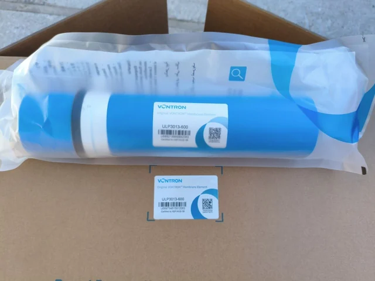

Phần tử màng RO Vontron ULP3013-600
Xem xét model được ghi trong tài liệu, các điều kiện thử nghiệm đã công bố, kích thước và các bước kiểm tra tính tương thích.
Xem chi tiết ULP3013-600
Phần tử màng thẩm thấu ngược (RO) lưu lượng cao 400GPD cần được lựa chọn theo công suất màng, áp suất nước cấp, bố trí các cấp lọc, vị trí lắp đặt và khả năng tiếp cận để bảo dưỡng. Đối với các chương trình của nhà phân phối hoặc thương hiệu thiết bị gia dụng, xác nhận vòi, cấu hình có bình chứa hoặc không có bình chứa, lõi lọc thay thế và bao bì mang nhãn hiệu riêng trước khi báo giá. Thông số chính bao gồm Công suất: 400 GPD.
Người mua khi so sánh phần tử màng thẩm thấu ngược (RO) lưu lượng cao 400GPD cần xem xét cả các yếu tố ngoài tên mẫu sản phẩm và kiểm tra lưu lượng nước đầu ra của màng, trình tự các cấp lọc, dải áp suất đầu vào, khả năng tiếp cận để bảo dưỡng và hình thức lắp đặt. Đối với các chương trình máy lọc nước RO OEM, báo giá cũng cần xác định ngôn ngữ trên bảng giao diện, các tùy chọn vòi hoặc bình chứa, lõi lọc thay thế, vị trí logo và yêu cầu về thùng carton xuất khẩu.
Đối với phần tử màng thẩm thấu ngược (RO) lưu lượng cao 400GPD, hãy sử dụng mẫu này khi người mua cần cấu hình máy lọc được xác định rõ, với thông tin lắp đặt thực tế, kế hoạch thay lõi lọc và kiểm soát thùng carton xuất khẩu. Trang sản phẩm nên giải đáp cách tích hợp thiết bị vào chương trình cung cấp nước uống cho nhà bếp, văn phòng hoặc mục đích thương mại trước khi lặp lại các tuyên bố chung về RO hoặc OEM.
| Công suất | 400 GPD |
|---|---|
| Loại | Màng khô |
Không xem phần tử màng 400GPD dành cho gia đình hoặc ứng dụng thương mại quy mô nhỏ là lựa chọn để xử lý nước thải công nghiệp. Trước tiên, hãy rà soát giới hạn của bằng chứng về PURO-ULD và gửi báo cáo về chất lỏng thực tế trong quy trình.
Gửi số lượng, thị trường mục tiêu, ghi chú về cấu hình và yêu cầu đóng gói cho phần tử màng thẩm thấu ngược (RO) lưu lượng cao 400GPD. Yuchen Water sẽ xác nhận các tùy chọn phù hợp, phụ kiện và chi tiết xuất khẩu trước khi báo giá.